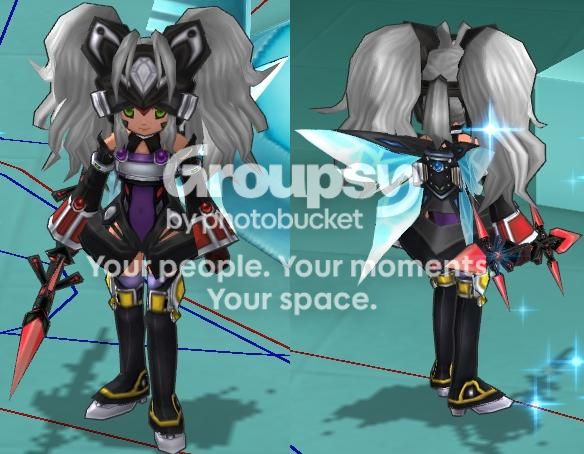
เงื่อนไข
- ต้องการเลเวล : 60 ขึ้นไป
- ค่าชื่อเสียง : ?
- ต้องเคยผ่านเควส : หัวใจแห่งปีก 「ココロのツバサ」 (ออโต้มาตะโทปาส)
- ต้องพก ออโต้มาตะ อาเมทิส รูบี้ และโทปาส ไว้กับตัว หรือ พกออโต้มาตะที่เคยทำไปแล้วทั้งหมดไว้กับตัว

1. ให้คุยกับ DEM何でも博士 เธอต้องการอุปกรณ์ในการสร้าง 「Ｄ－ジェネレーター」 ให้รับเควสจากเธอ (ใช้ 1 แต้มเควส)

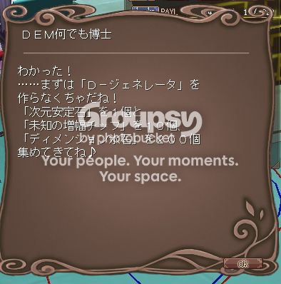
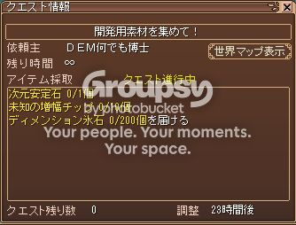
- ของที่ต้องหาในเควส
- 1. 次元安定石 (หินเข้าดันไดเมนชั่น) 1 ก้อน
- ผสมจาก
- - マナ・ウォーター 1 ชิ้น + 固い石ころ 1 ชิ้น +
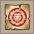
紋章紙 1 ชิ้น- - マナ・ウォーター 1 ชิ้น + หินได้เมนชั่นม่วงๆที่ดรอปจากมอนในดันมิติดันไหนก็ได้ 1 ชิ้น
- 2.
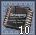
未知の増幅チップ 10 ชิ้น ดรอปจาก Ｄ－メタリカ ในDD廃炭鉱(ดันไดเมนชั่นเหมือง ที่เกาะวอชิพ)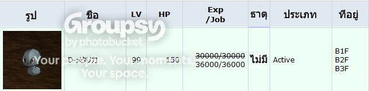
- 3.
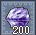
ディメンション氷石 200 ก้อน ดรอปจากมอนทุกตัวในDDノーザン(ดันไดเมนชั่นเหนือ)2. หลังจากส่งเควสแล้ว เราจะได้ 「Ｄ－ジェネレーター」 มา (เป็นอีเวนท์ไอเทม)
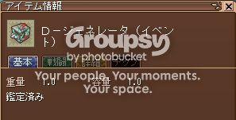
3. คุยกับ DEM何でも博士 อีกครั้งเพื่อเลื่อก ออโต้มาตะที่จะทำ Dimension Part
และจ่ายค่า EXP ในการทำตามที่ระบุไว้ด้านล่างนี้
ตัวละคร Lv.60ถึง70 ใช้EXP 1,486,648
ตัวละคร Lv. 71ถึง80 ใช้EXP 2,821,238
ตัวละคร Lv. 81ถึง90 ใช้EXP 5,109,196
ตัวละคร Lv. 91ถึง100 ใช้EXP 11,308,416
ตัวละคร Lv. 101ถึง110 ใช้EXP 119,119,622
*ใช้แต่ EXP อย่างเดียวไม่ใช้ JOB
เมื่อทำ Dimension Part แล้ว ออโต้มาตะตัวนั้นจะมีปุ่ม change ขึ้นมาตามรูป
เมื่อกดปุ่ม change จะทำให้เปลี่ยนไปกลับระหว่างออโต้มาตะ และพาร์ท ได้
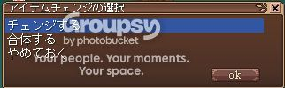
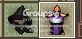
*หมายเหตุ*
- เมื่อทำ Dimension Part ทุกครั้งจำเป็นต้องทำ เควสสร้าง 「Ｄ－ジェネレーター」 ในข้อ 1 ทุกครั้ง
- เกราะ Dimension Part จะมีความสามารถเพิ่มขึ้นตามสเตตัสของออโต้มาตะตัวนั้นๆ
- เกราะ Dimension Part ไม่สามารถหลอมรวมกับ ชุด หรือ อาวุธ ของเผ่าอื่นๆได้
- ความทนทานของเกราะ Dimension Part คือความสนิดสนมของออโต้มาตะตัวนั้นๆ
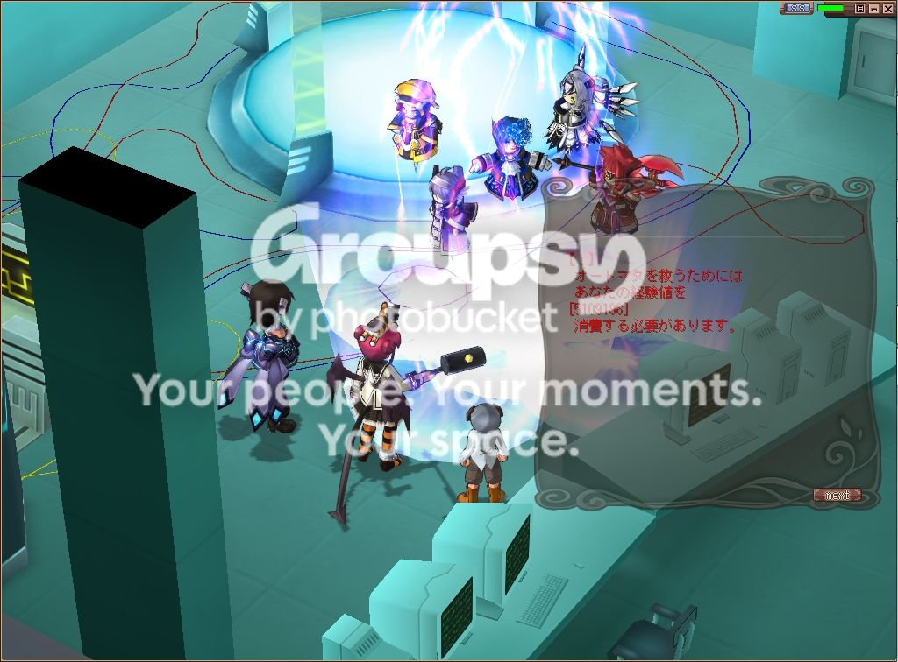
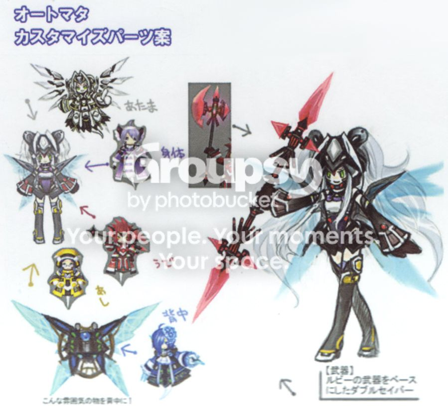
____________________________________________________________________________________________
รายละเอียด Dimension Part ส่วนต่างๆ
オートマタボディ（アメジスト） , Automata Body(Amethyst)
Lv.70
ตำแหน่งพาร์ท : ลำตัว
สเตตัสพื้นฐานของพาร์ท
|-HP : +100
|-MP : +80
|-SP : +80
|-Def : +40
|-M.Def : +37
สเตตัสของออโต้มาตะที่ส่งผลต่อพาร์ท
|-พาร์ทHP +10% จาก HP ของออโต้มาตะ(Amethyst)
|-พาร์ทDef +20% จาก Def ของออโต้มาตะ(Amethyst)
|-พาร์ทM.Def +20% จาก M.Def ของออโต้มาตะ(Amethyst)
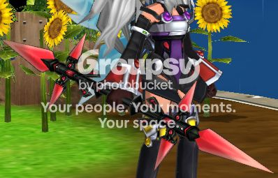
オートマタアーム（ルビー） , Automata Arm(Ruby)
Lv.70
ตำแหน่งพาร์ท : แขน
ประเภทการโจมตี : ฟัน
สเตตัสพื้นฐานของพาร์ท
|-STR : +3
|-Atk(ฟัน) : +64
|-M.Atk : +30
สเตตัสของออโต้มาตะที่ส่งผลต่อพาร์ท
|-พาร์ทAtk(ทุบ/ฟัน/แทง) +100% จาก Atk ของออโต้มาตะ(Ruby)
|-พาร์ทS.Hit +10% จาก S.Hit ของออโต้มาตะ(Ruby)
|-พาร์ทS.Avoid +10% จาก S.Avoid ของออโต้มาตะ(Ruby)
オートマタレッグ（トパーズ） , Automata Leg(Topaz)
Lv.70
ตำแหน่งพาร์ท : ขา
สเตตัสพื้นฐานของพาร์ท
|-HP : +50
|-Def : +8
|-M.Def : +6
|-DEX : +2
|-VIT : +2
|-PAYL : +90
|-CAPA : +90
สเตตัสของออโต้มาตะที่ส่งผลต่อพาร์ท
|-พาร์ทHP +10% จาก HP ของออโต้มาตะ(Topaz)
|-พาร์ทDef +5% จาก Def ของออโต้มาตะ(Topaz)
|-พาร์ทM.Def +10% จาก M.Def ของออโต้มาตะ(Topaz)
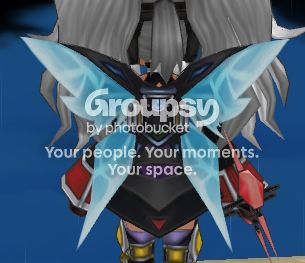
オートマタウイング（サファイア） , Automata Wing(Sapphire)
Lv.80
ตำแหน่งพาร์ท : หลัง
สเตตัสพื้นฐานของพาร์ท
|-MP : +70
|-SP : +70
|-INT : +3
|-MAG : +2
|-S.Hit : +5
|-L.Hit : +5
|-M.Hit : +5
|-Speed : +10
สเตตัสของออโต้มาตะที่ส่งผลต่อพาร์ท
|-พาร์ทS.Hit +10% จาก S.Hit ของออโต้มาตะ(Sapphire)
|-พาร์ทL.Hit +15% จาก L.Hit ของออโต้มาตะ(Sapphire)
|-พาร์ทM.Hit +5% จาก M.Hit ของออโต้มาตะ(Sapphire)
オートマタヘッド（ダイヤモンド） , Automata Head(Diamond)
Lv.90
ตำแหน่งพาร์ท : หัว
สเตตัสพื้นฐานของพาร์ท
|-HP : +50
|-MP : +50
|-SP : +50
|-STR : +3
|-MAG : +4
|-M.Atk : +3
|-Def : +6
|-M.Def : +6
สเตตัสของออโต้มาตะที่ส่งผลต่อพาร์ท
|-พาร์ทAtk(ทุบ/ฟัน/แทง) +20% จาก Atk ของออโต้มาตะ(Diamond)
|-พาร์ทM.Atk +20% จาก M.Atk ของออโต้มาตะ(Diamond)
|-พาร์ทCritical +10% จาก Critical ของออโต้มาตะ(Diamond)